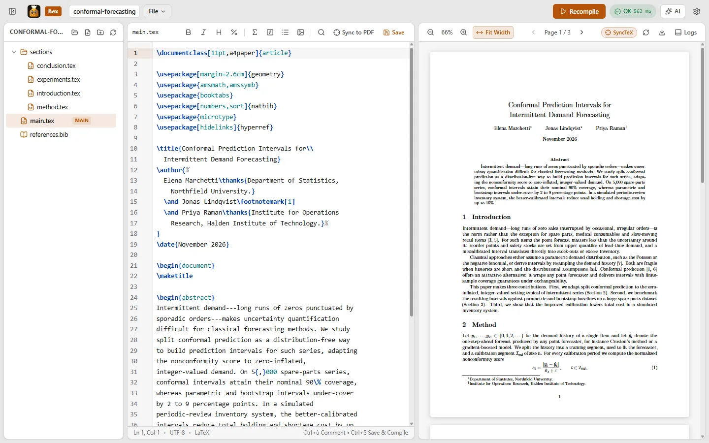
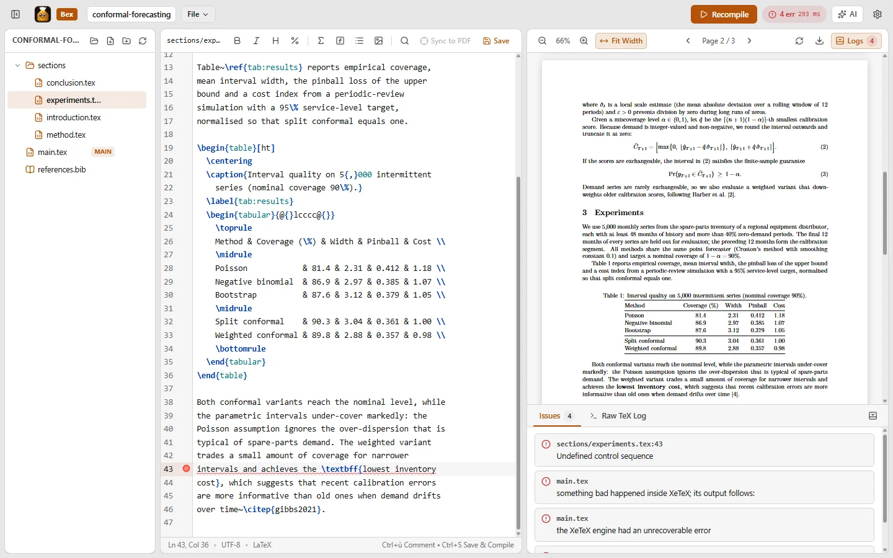
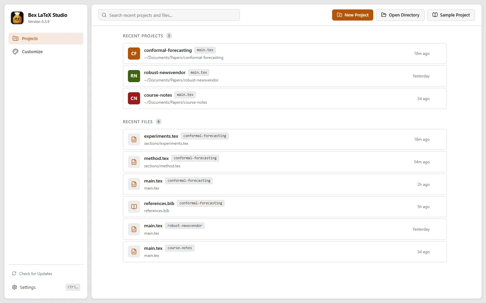

Abstract. Bex LaTeX Studio is a desktop editor for writing papers, theses and other documents in LaTeX. The TeX engine is built into the app, so there is no TeX distribution to install and configure: download it, open a folder, and compile. Every time you save, the document is compiled and the PDF beside your source is updated. Bex is free and runs on macOS, Windows and Linux.
Download
Table 1 lists the installers for the latest release. If you are not sure which one to pick, take the first file listed for your operating system.
| Platform | Package | Size | Link |
|---|---|---|---|
| macOS | Disk image .dmga |
– | Download the macOS disk image |
| Windows | Installer .exe recommended |
– | Download the Windows installer (.exe) |
| Windows | MSI package .msi |
– | Download the Windows MSI package |
| Linux | AppImage .AppImage |
– | Download the Linux AppImage |
| Linux | Debian, Ubuntu .deb |
– | Download the Debian/Ubuntu package |
| Linux | Fedora, RHEL .rpm |
– | Download the Fedora/RHEL package |
a For Macs with Apple Silicon only; see Section 2.1. ↑
Older versions and release notes are on the releases page [2].
Installation
The apps are not notarized by Apple and not code-signed for Windows, so both systems ask for one extra confirmation the first time. This is expected, and the steps below take a minute.
macOS
Bex needs a Mac with Apple Silicon (M1 or later); there is no Intel build.
Open the .dmg and drag Bex LaTeX Studio into the Applications folder. Because the app is not notarized by Apple, macOS blocks it on first launch; run this once in Terminal to clear the block:
xattr -dr com.apple.quarantine "/Applications/Bex LaTeX Studio.app"From then on Bex opens like any other app.
Windows
If your browser warns that the file isn’t commonly downloaded, keep it: in Edge, choose … → Keep → Show more → Keep anyway. Then run the .exe installer. If Windows SmartScreen says it protected your PC, choose More info, then Run anyway. The .msi package installs the same app and is meant for machines where MSI is preferred.
Linux
Run the commands from the folder you downloaded the file to. For the AppImage, make the file executable and start it:
chmod +x Bex.LaTeX.Studio_*_amd64.AppImage
./Bex.LaTeX.Studio_*_amd64.AppImageOn Debian or Ubuntu:
sudo apt install ./Bex.LaTeX.Studio_*_amd64.debOn Fedora or RHEL:
sudo dnf install ./Bex.LaTeX.Studio-*.x86_64.rpmUpdates
You only need to come here once. Bex checks for a new version each time it starts and tells you when one is available; one click downloads and installs it, and a restart switches to the new version.
Getting started
- Launch Bex LaTeX Studio. It opens on the Home screen (Figure 4).
- Choose New Project to start a new document, Open Directory to work on an existing folder of
.texfiles, or Sample Project to try a ready-made example. - Write your document in the editor.
- Press Ctrl+S (⌘S on macOS). The file is saved and compiled, and the PDF on the right is updated.
- Double-click anywhere in the PDF to jump to the line of source that produced it.
Note. The first compile downloads the LaTeX packages your document needs, so it requires an internet connection and takes longer than usual. Later compiles reuse them.
Features
Built-in TeX engine. Bex compiles with Tectonic [4], which ships inside the app. You do not need TeX Live or MiKTeX: packages are fetched automatically the first time a document uses them. If pdfLaTeX, XeLaTeX or LuaLaTeX is already installed on your computer, Bex detects it and you can select it in Settings instead.
Live PDF preview. Each save compiles the document and refreshes the PDF next to the source, keeping your place in it (Figure 1).

Source and PDF in sync. Double-click a point in the PDF (or Ctrl/⌘-click it) to jump to the source line that produced it. In the other direction, Ctrl+Shift+J (⌘⇧J) shows where the line under the cursor ends up in the PDF.
Errors you can find. Errors and warnings from the compiler are gathered in an Issues panel in the preview; click one to jump to the reported line. If a compile fails, the last good PDF stays on screen (Figure 2).

sections/experiments.tex; the last good PDF stays on screen.AI assistant (optional). A sidebar assistant can answer questions about your document and read, edit and create files in your project (Figure 3). It works with Google AI Studio, using your own API key, or with a model running on your own computer through Ollama, LM Studio, vLLM or any OpenAI-compatible server. Bex is fully usable without it.

Home screen. Recent projects and files are one click away and can be searched; new projects, folders and the sample project start from the same screen (Figure 4).

Comfortable to work in. Light and dark themes, an adjustable interface scale, and a shortcut to comment or uncomment lines with %.
Automatic updates. The app looks for new versions itself and installs them when you ask it to (Section 2.4).
Keyboard shortcuts
Table 2 lists the main shortcuts. The app shows most of them under Settings → About Bex.
| Action | macOS | Windows, Linux |
|---|---|---|
| Save and compile | ⌘S | Ctrl+S |
| Toggle file sidebar | ⌘B | Ctrl+B |
| Toggle AI sidebar | ⌘⇧A | Ctrl+Shift+A |
| Sync editor to PDF | ⌘⇧J | Ctrl+Shift+J |
| Jump from PDF to source | double-click, or ⌘-click | double-click, or Ctrl-click |
| Toggle comment | ⌘ù or ⌘/ | Ctrl+ù or Ctrl+/ |
| Interface zoom in, out | ⌘+, ⌘− | Ctrl++, Ctrl+− |
| Reset interface zoom | ⌘0 | Ctrl+0 |
| Settings | ⌘, | Ctrl+, |
References
- [1] Bex LaTeX Studio. Source code. https://github.com/Vinello28/bex
- [2] Bex LaTeX Studio. All releases. https://github.com/Vinello28/bex/releases
- [3] Bex LaTeX Studio. Issue tracker. https://github.com/Vinello28/bex/issues
- [4] The Tectonic Project. Tectonic: a modernized, complete, self-contained TeX/LaTeX engine. https://tectonic-typesetting.github.io/